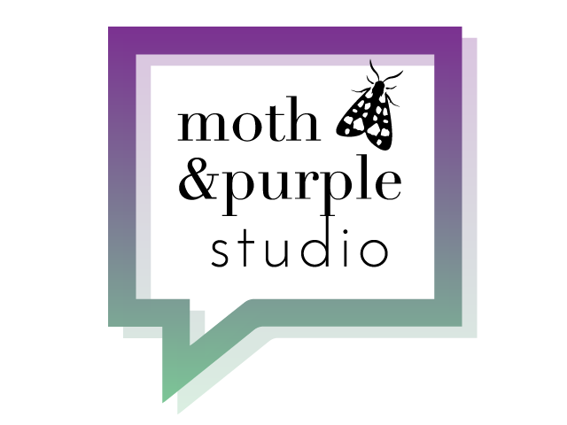

My name is Paulina Chojecka. I have found your internship offer on Facebook's group "Praca dla grafików komputerowych" and I said: "This is place for me!".
I am Junior VR/AR Designer in softwarehouse Polidea. Previously I was a Graphic Designer for ~3 years. I can use Adobe Photoshop, Illustrator, InDesign. Sometimes I use also Adobe After Effects, Premiere Pro and Animate to make some animations.
During last year I find my new hobby - UX. I established UX scientific society at my academy (Polish-Japanese Academy of Information Technology) and I learned also Sketch, Marvel and Moqups. I was participated in making sites as a UX Designer like Geitner24.de ; ObligacjeSpoleczne.eu (PS: the banner concept was not my idea).
My biggest dream is work with new technologies, mobile apps and people who make awesome modern websites. I want to know everything about Front-end Development. In the future I will make perfect WebVR experiences :)
I have finished Front-End Developer course on Akademia 108 in Warsaw and I believe that this knowledge helps me to better understand all process of making great websites/apps. Now is time for internship - I want to meet people who work with HTML, CSS, JS, Bootstrap technologies and learn from them. In the future probably I will teach other people (I wish!:) I have basic knowledge about HTML, CSS, JavaScript and C#. I use Brackets, Github and Gitlab. In current job I work with Unity and I use Sourcetree.
I believe I can be part of MDBootstrap Team. I know that I still have a lot to learn, but trust me-
I am master in learning new skills and I love to do it!
My graphic design portfolio:
